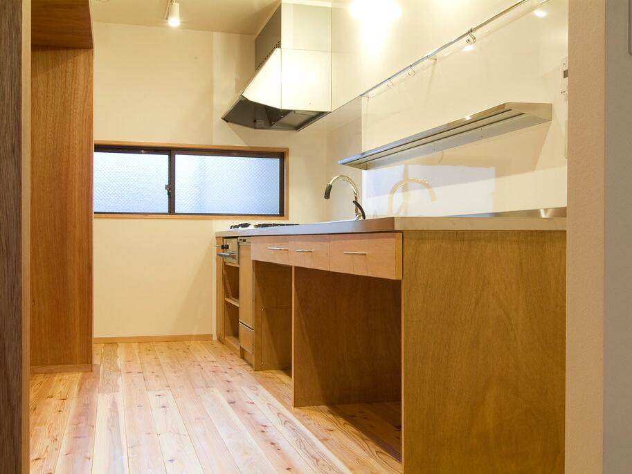
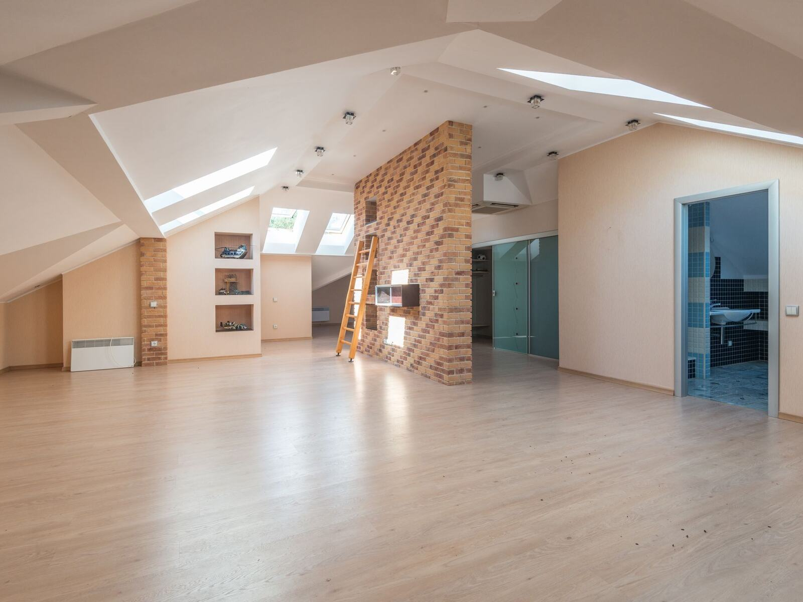

仕入れ後
販売前に、内装を整えておきたい
壁紙や床の汚れ・傷など、内覧の前に整えておきたい箇所。写真をお送りいただければ、箇所ごとに内容を確認してご案内します。
仕入れ後の現地調査、施工できるかどうかの判断、見積を出せる時期のご案内、販売開始日から逆算した工程まで。必須工事・推奨工事・見送り可能な工事に分けた内訳つきの見積で、手を入れる範囲をご判断いただけます。

仕入れのペースや販売の予定に合わせて、いつもの施工会社だけでは手が足りない時にご相談ください。
壁紙や床の汚れ・傷など、内覧の前に整えておきたい箇所。写真をお送りいただければ、箇所ごとに内容を確認してご案内します。

販売価格とのバランスを見ながら、工事範囲を段階的に検討したい。範囲ごとに分けた見積で、比べながらご判断いただけます。
写真撮影や内覧の開始日に合わせて、工程を相談しながら進めたい。
内装、建具、外まわりなど、工種ごとに別々の会社へ連絡するのが負担になっている。
どの箇所をどう直したかを、写真と見積の内訳で残しておきたい。
手を入れる範囲は、物件ごとに事業者様がご判断ください。判断しやすいよう、範囲ごとに分けて見積をご案内します。
| 必須工事 | 販売に支障がある破損・不具合の補修。建具の開閉不良、床の大きな傷、壁の穴など。販売前に直しておくべき箇所 |
|---|---|
| 推奨工事 | 汚れや色あせが目立つ壁紙・床材の張替え、ハウスクリーニングなど。内覧時の印象を整えるための工事 |
| 見送り可能な工事 | 劣化した設備部品の交換や、部屋単位での内装の入替えなど。販売価格や方針に合わせて、見送るかどうかをご判断いただく工事。許可・資格が必要な工事は、必要な許可・資格を有する施工パートナーを手配できる場合に限ります |
写真と物件情報から、施工できるかどうかと現地調査の要否をお知らせします。見積を出せる時期も先にご案内します。
工事を3つに分けて内訳をご提示します。設備や材料に代わりの選択肢がある場合は、あわせてご案内します。
販売開始や内覧の予定をお知らせください。複数の工種をまとめて調整し、可能な工程をご案内します。完了時は写真でご報告します。
内容によっては、施工パートナーを手配できない場合があります。その場合は、その旨をご連絡します。
仕入れ物件の手直しのご相談はこちら工事範囲が決まっていない段階でもご相談いただけます。
今ある1件を見積相談販売開始・内覧開始の予定日をお知らせください。対応可否、現地調査の要否、見積を出せる時期を先にご案内し、可能な工程をご提案します。
ご相談を受け付けてから写真報告まで、次の12段階で進めます。各段階で、次に何が起きるかをお知らせします。
PHASE 1受付・確認
PHASE 2現地調査・見積
PHASE 3発注・施工
PHASE 4完了
所要日数は、案件の内容と施工パートナーの状況によって異なります。そのため一律の日数はお約束せず、段階ごとに予定をご案内します。正式な見積は、必要な現地確認と施工パートナーの判断を経てから提出します。
買取再販事業者様から
ご相談いただけます。写真や間取り図など、分かる範囲の情報をお送りください。現地を確認できない段階では、概算でのご案内になる場合があります。
工程は、工事内容と施工パートナーの状況によって異なります。ご希望の日程をお知らせいただければ、対応できるかどうかを確認してご回答します。日程をお約束できない場合は、その旨をお伝えします。
鍵の扱いや作業中の管理方法は、案件ごとに確認し、見積の前にお知らせします。

状況が分かる写真と、物件の所在地・修繕内容をお送りいただければ、内容を確認のうえ担当者からメールまたはお電話でご連絡します。写真がない場合も、内容をご記入のうえご相談いただけます。